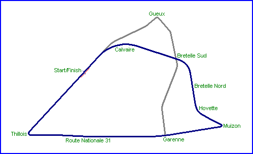

| Reims, France Type:
Street Circuit Photographs Taken: 17th August, 1994 |
|
| Reims, France Type:
Street Circuit Photographs Taken: 17th August, 1994 |
|
Consisiting of a fast layout of public roads in the north-east of France, the Reims triangle played host to the French Grand Prix 16 times between 1932 to 1966. The circuit was modified in 1953 to bypass the village of Gueux using a faster and longer configuration. Apart from the French Grand Prix, the circuit also hosted the Marne Grand Prix, the 12 Heures de Reims for sportscars and several Formula 2 races. The circuit closed in 1970 after political and financial considerations caused the Grand Prix to move to the newer circuits of Paul Ricard and Dijon-Prenois
|| Contents | Pits & Grandstands | Calvaire | Gueux | Bretelle Sud | Bretelle Nord | Muizon | RN31 | Thillois || Home ||

Click on corner names above to view photographs.
Return to racingcircuits.net's Photo Archive Main Index
| Related Information | ||
| Photographs of Reims by Andy Elvin, early 1990's | ||
| Photographs of Reims by Malcolm Mitchell, 1997 | ||
| Photographs of Reims by Roelard Smit, July 2004 | ||
| Amis du Circuit de Gueux | ||
Photographs kindly supplied by Luc Ghys.